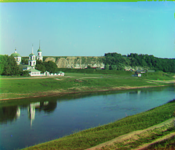

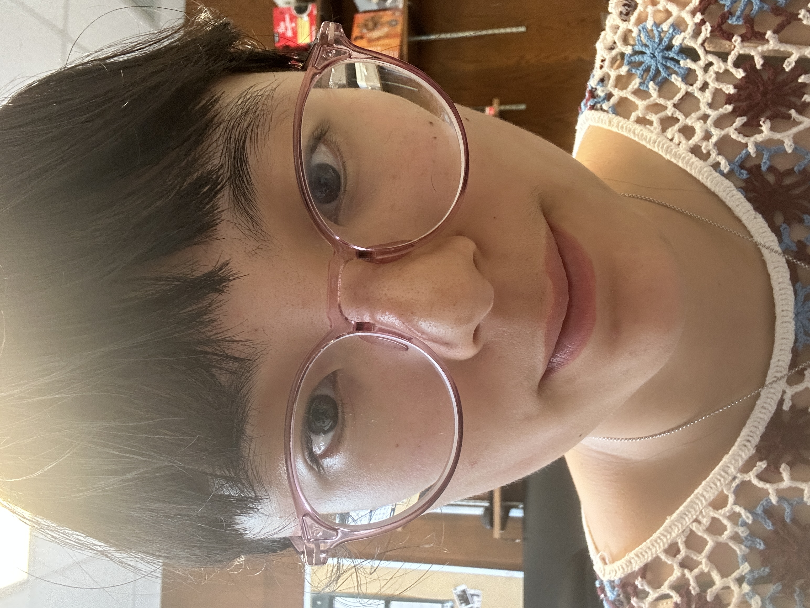
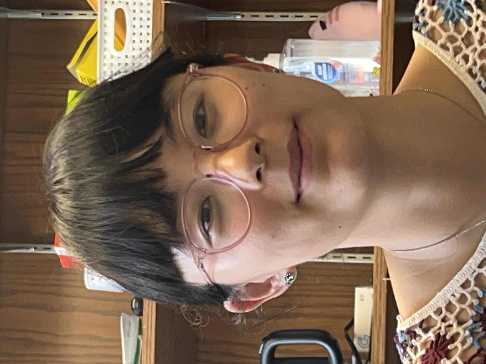
To kick this assignment off, I first took a selfie up close to my face, and then took a few steps away and took the same image by zooming into my face. While I'd like to think I look good in all photos, the second one will feature fewer distortions. While taking a close-up selfie, the distance of each of the facial features from the camera varies significantly, as our noses might be twice as close to the camera as our ears and jaw, which causes the nose to be disproportionately large and the sides of the face to be compressed. Taking the photo from a distance brings the different features to around the same distance from the camera, creating an image more similar to when other people look at you.
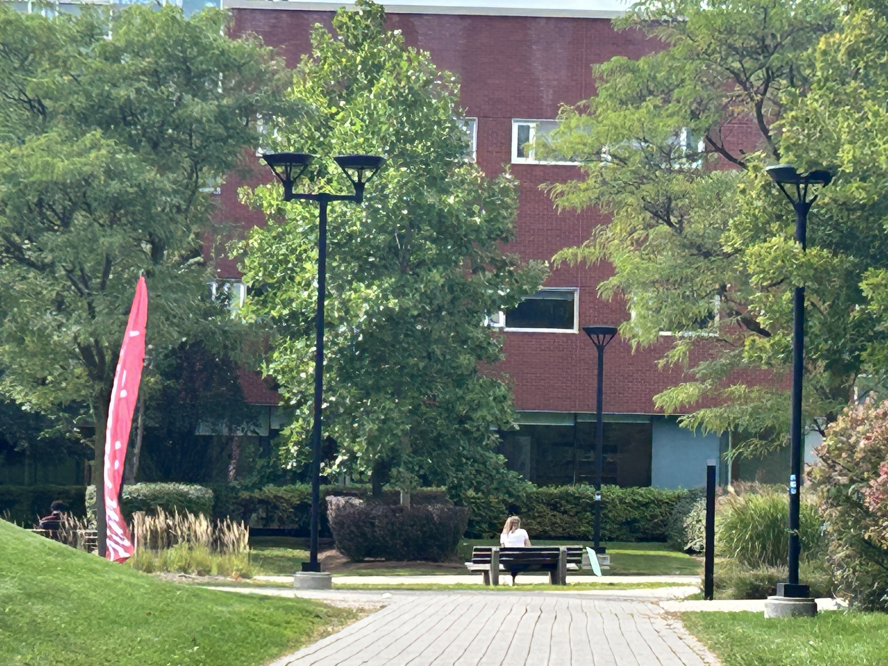
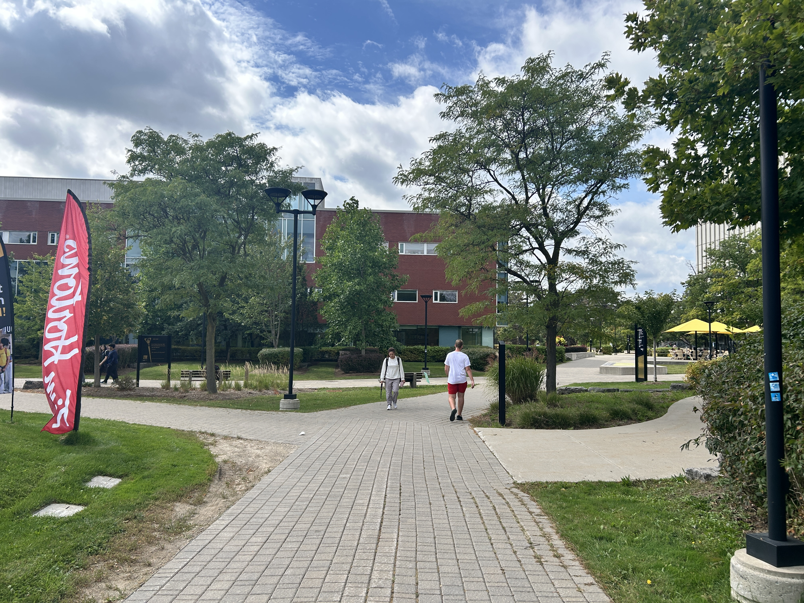
Next, I repeated this process with some scenery outside DWE. When it comes to scenes, the same logic as selfies applies, however the opposite effect is desired. From a distance, the items of interest, perhaps the bench, Tim Hortons flag and street light, are all around the same distance from the camera, so they appear flat in the image. But when I'm standing closer, the distances begin to vary significantly, giving us a sense of depth in the image.
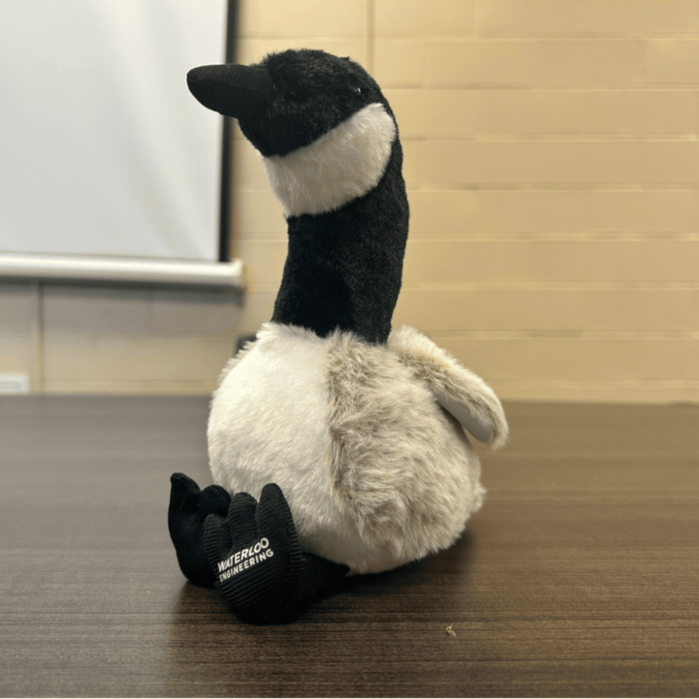
Finally I created a cinematic scene of Mr. Goose looking into the distance with melancholy, perhaps pondering the philosophical issues of this world, with a dolly zoom. This effect is created by moving away from the subject while simultaneously zooming in, creating an effect where the background seems to be racing past the subject.
Prokudin-Gorskii was a Russian photographer who developed a method for capturing colour images in the early 20th century. He did this by photographing the same scene three times, each time with a different colour filter (red, green and blue). The three images are then aligned and combined to create a full-colour image. The Library of Congress in the United States has digitized his collection and made it available online, allowing us to download the images and recreate the scenes in colour with modern techniques of image alignment and photo editing.
To start off, I visited the Library of Congress to see how they formed the colour images from Prokudin-Gorskii's images. I then created a script in Python to automate parts of the process, with intermediate steps that allow the user to interact. I've attached the outputs of the riverside scene along with the functionality of my script. I would consider this my "brute force" method of getting the images aligned.
The input of the script is a vertical strip with the three filtered images in the order B, G, R.
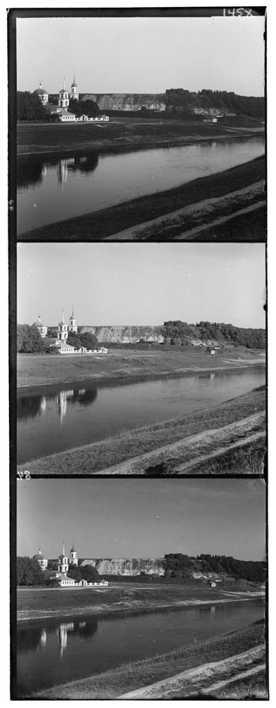
The script then converts the image to 8-bit scale and splits it into the individual Blue, Green, and Red layers. The script takes 8-bit JPG images as well as 16-bit TIFF images.
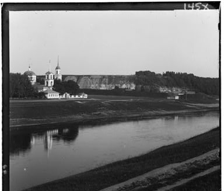
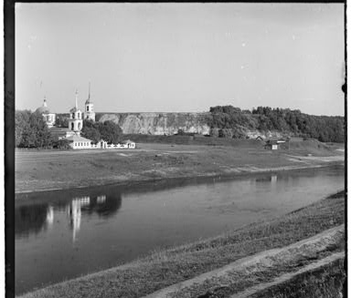
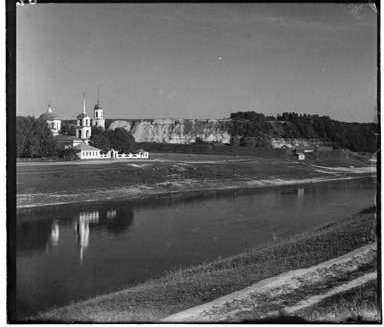
To help improve the quality of the alignment process, I put a couple of additional measures in place.
Each channel features a different filter's view of the scene, so the channels have different overall brightness and contrast. Before scoring, every channel is normalized to zero mean and unit standard deviation, so the metrics compare structure rather than exposure.
Scores (Euclidean distances) are computed only on the interior of the images, with 10% dropped from each side. The
plate borders, dust and scan edges are not part of the scene, and np.roll wraps pixels around
the image edge when it shifts. Both of these would otherwise skew the score toward wrong shifts.
To help with alignment, the user selects anchor points. An anchor point is an image feature that you can safely identify in all three images, such as the corner of a building or the tip of a tree. Two anchors are the default, but the user can select more or fewer in the terminal window. I selected three anchors in this example; two are visible in the screen captures I took.
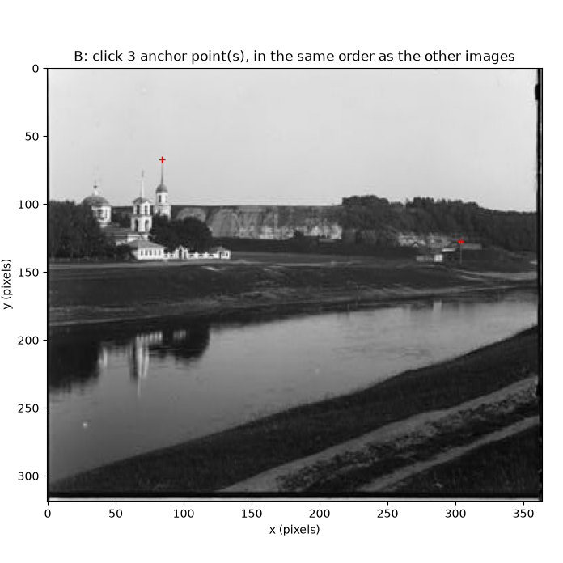
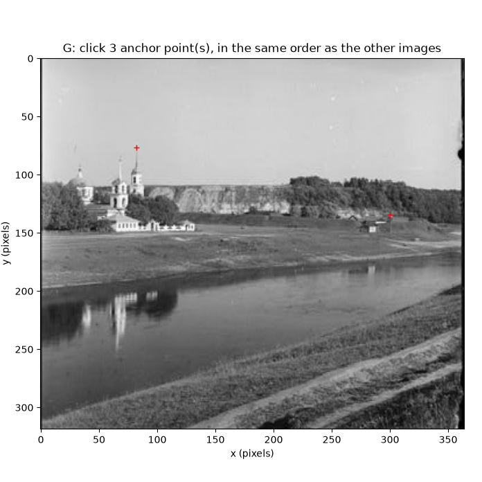
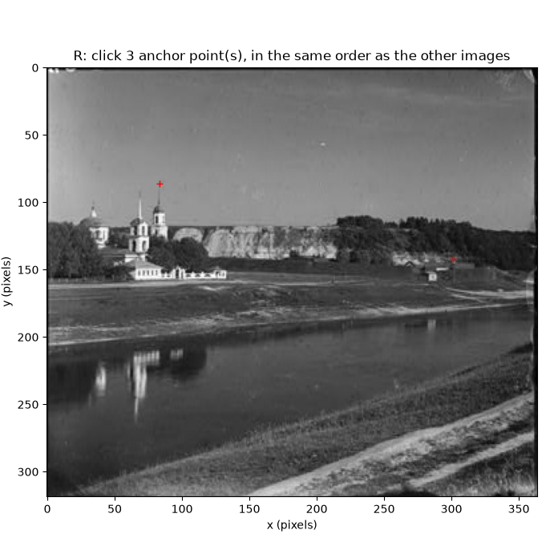
Using these anchor points as a starting point, the script minimizes the Euclidean distance between the pixel values in the three layers by searching nearby locations. You can set the search range in the terminal; I started with a value of 40. Once the distance is minimized, the aligned layers are combined to form the final colour composite. Let's see how we did!
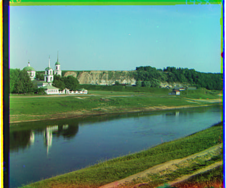
I tried this again for a few more images for good measure.
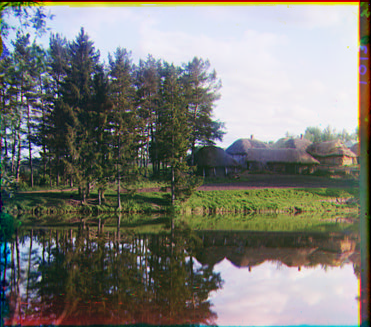
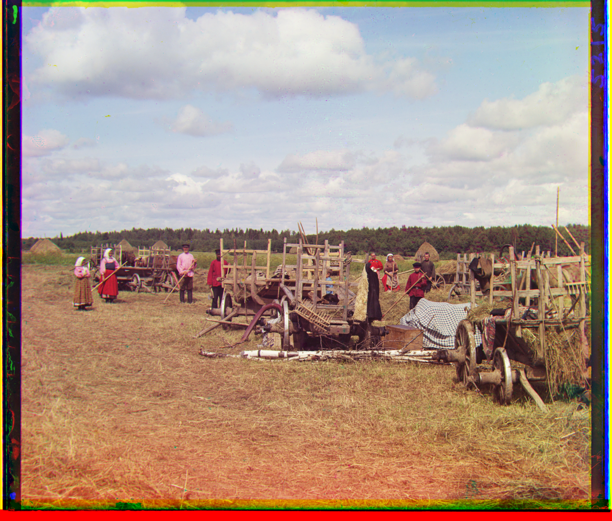
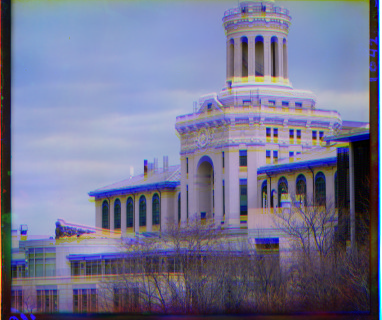
Now that the brute force method is complete, I moved on to a more automated approach. The plan was to use an image pyramid to search for alignment at a lower resolution, and then use that as a starting point for the next higher resolution. This allows for a more efficient search, and can also help to avoid local minima in the optimization process.
To see if this idea would work, I first implemented the simple single-scale version: an exhaustive search.
For every integer shift (dy, dx) in a window of ±15 pixels, the moving channel is shifted with np.roll, scored against the
reference (B) on the interior region, and the best-scoring shift is kept. For the smaller images, such as 00125 of the
church and river, this process is not too costly. The aligned outputs are below: the left is the
exhaustive search, and the right is the pyramid search. Pretty similar, right?

Now that I know that minimizing L2 will give me an aligned image, I can use the pyramid method to improve the efficiency of the search. To handle large images, the same search function is reused recursively in a coarse-to-fine pyramid. The pyramid is built from my own downsampler, which halves each dimension by averaging every 2×2 block of pixels. Averaging acts as a simple low-pass filter, so shrinking the image doesn't introduce aliasing artifacts that could mislead the search. The algorithm works like this:
A ±15 px search on a tiny image corresponds to a search range of hundreds of pixels at full resolution. The cost stays low: one 961-candidate search on a small image, then only 25 candidates per level on the way back up. This is what brings full-size plates down to well under the one-minute-per-image target.
I switched to the train image, 00458u, for the rest of the analysis, as it is a higher resolution image. The grids below show what happens at each level of the pyramid (click any panel to open it full size). In each panel, from left to right: the reference (B) channel, the original moving channel, the moving channel after the shift, and the difference image. The first grid compares G to B, and the second compares R to B. Difference images are scaled for visibility, so the brighter the pixel, the more misalignment there is. The shift vectors are shown after the grids.
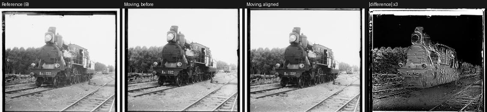
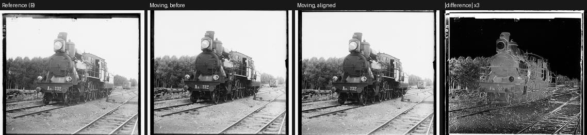
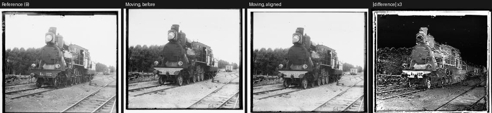
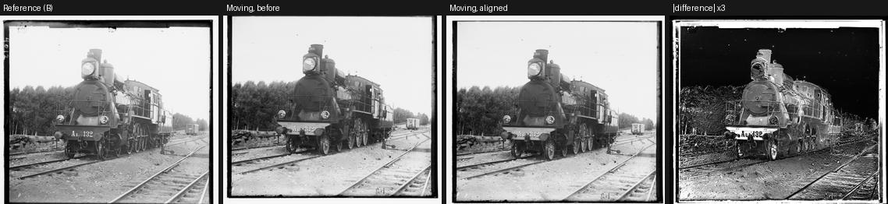
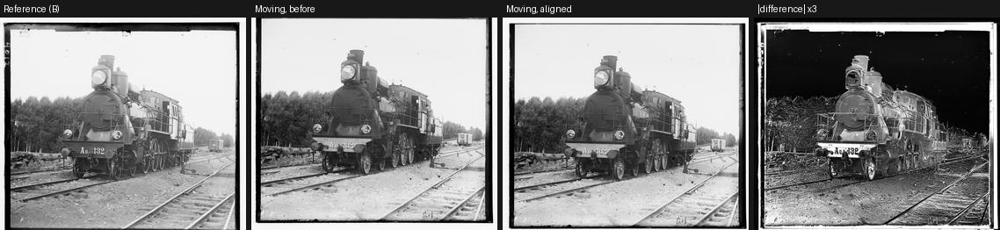
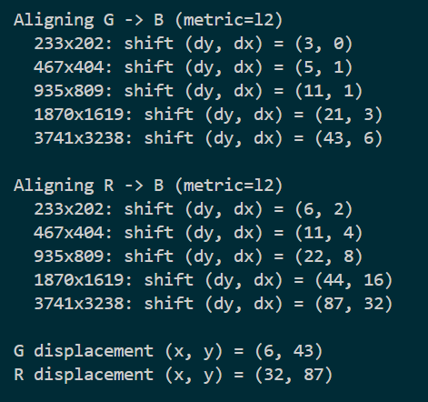
I was curious, so I also tested how the L2 (Euclidean distance) metric compares to the NCC (normalized cross-correlation) metric. To make them comparable, the script uses the negative mean squared difference between the images, so that both metrics are maximized.
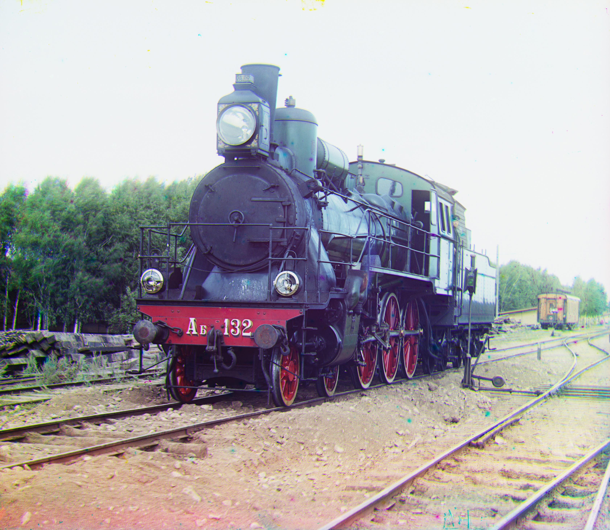
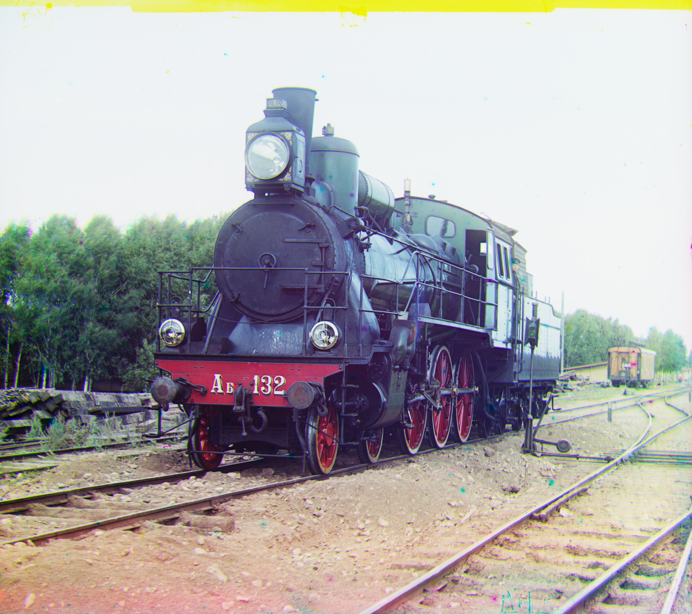
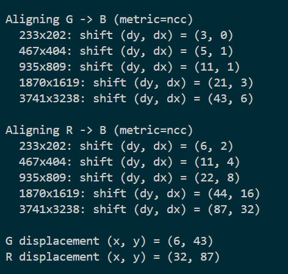
Displacements (x, y) found by the pyramid search for every plate, using both metrics.
| Plate | G → B (L2) | R → B (L2) | G → B (NCC) | R → B (NCC) |
|---|---|---|---|---|
| 00056v | (1, 6) | (1, 13) | (1, 6) | (1, 13) |
| 00125v | (2, 5) | (1, 10) | (2, 5) | (1, 10) |
| 00163v | (1, -3) | (1, -4) | (1, -3) | (1, -4) |
| 00458u | (5, 35) | (26, 71) | (5, 35) | (26, 71) |
| 00804v | (-2, 6) | (-4, 13) | (-2, 6) | (-4, 13) |
| 01007a | (11, 49) | (11, 105) | (11, 49) | (11, 105) |
| 01047u | (16, 20) | (28, 59) | (16, 20) | (28, 59) |
| 01164v | (2, 6) | (3, 11) | (2, 6) | (3, 11) |
| 01269v | (2, 6) | (3, 14) | (2, 6) | (3, 14) |
| 01522v | (2, 6) | (2, 13) | (2, 6) | (2, 13) |
| 01597v | (1, 7) | (1, 16) | (1, 7) | (1, 16) |
| 01598v | (0, 8) | (-1, 17) | (0, 8) | (-1, 17) |
| 01657u | (7, 45) | (9, 96) | (7, 45) | (10, 96) |
| 01725u | (37, 64) | (64, 133) | (37, 64) | (64, 133) |
| 01728v | (1, 8) | (1, 18) | (1, 8) | (1, 18) |
| 01861a | (32, 59) | (52, 122) | (32, 59) | (52, 122) |
| 10131v | (2, 6) | (3, 12) | (2, 6) | (3, 12) |
| 31421v | (0, 8) | (0, 13) | (0, 8) | (0, 13) |
Across all 18 plates, L2 and NCC agreed on every displacement except one: the R → B offset for 01657u is (9, 96) with L2 and (10, 96) with NCC. This is expected. Once each channel is normalized to zero mean and unit variance, minimizing the mean squared difference is nearly the same as maximizing correlation, so the two metrics rank candidate shifts almost identically. They are not perfectly equivalent because I normalize the whole channel but score only the interior region.
This assignment was already a struggle, but here I am with some extra time on my hands, and I decided to give the bells & whistles a try. The discoloured borders were a nuisance, so I added a function to automatically crop them away. At least I tried to. The plates have a dark frame around each exposure, and next to it a thin strip that looks strangely coloured, because the three channels don't overlap there. Instead of cropping a fixed margin, the script detects the border:
Restricting the search to the outer band prevents a genuinely dark part of the scene (a shadow, a dark garment) from being mistaken for a border and cropped away. The crop adapts to each image, so plates with different border widths are handled with a single fixed set of parameters.
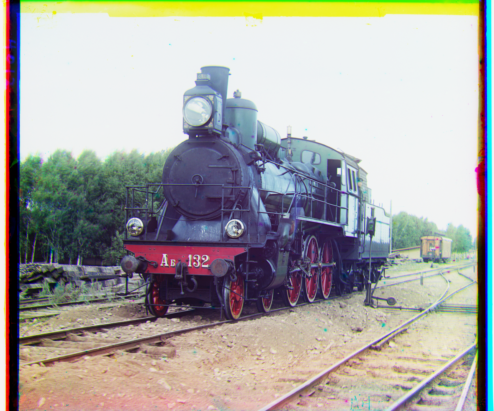
This image seemed to work pretty well, but as you can see with the NCC image above, this feature is not perfect.
I tested my script extensively, and it worked well on all 18 images included in the assignment. That took wayyyy too much time! The one exception is that I couldn't get auto-crop to work well on every image.
I used the Emir of Bukhara to test the bells and whistles, however it didn't even make it to the autocrop step! Matching raw pixel intensities assumes the same object has similar brightness in every channel. That breaks down when it doesn't. In the Emir portrait, his blue robe is bright in the blue channel but dark in the red channel, so the intensity-based score can favor a wrong shift. To test if the problem was a matter of limited search radius or if the global minimum was truly the misaligned image, I ran the extensive search, and it turns out it was the former. For efficiency, aligning on image gradients or edges might be a more effective method.
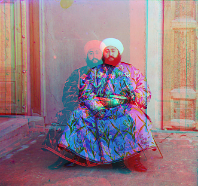
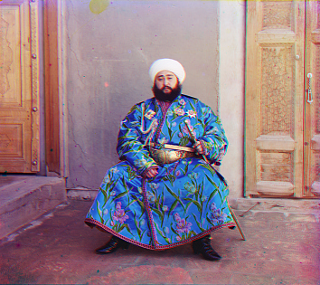
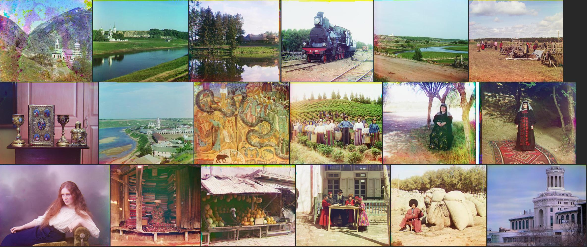